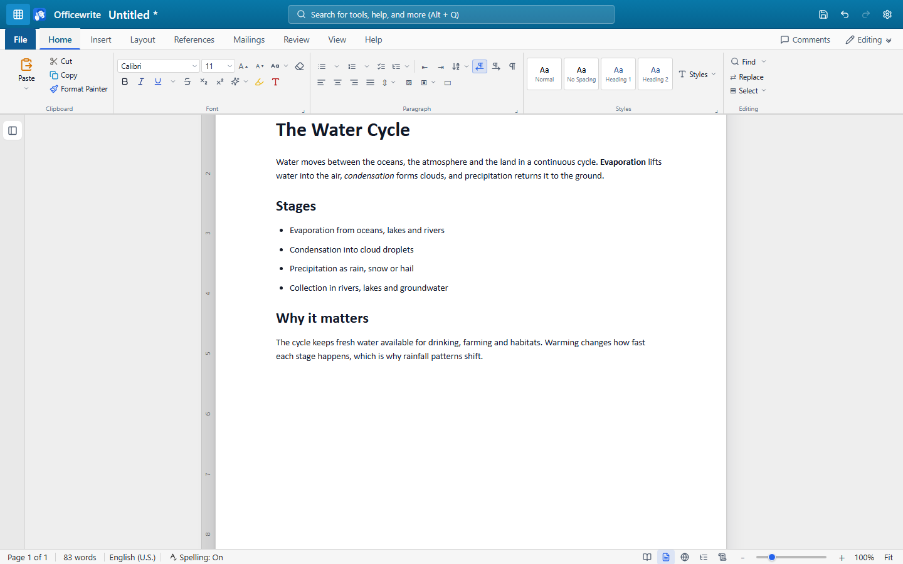
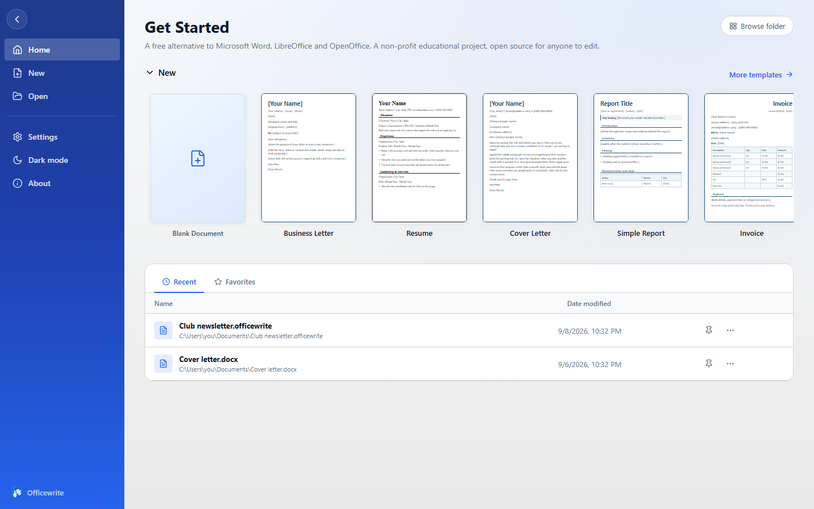

Write
Fonts, colours, text effects, bullets, numbering, checklists and multilevel lists, tables you can size to the inch, pictures with drag handles and seven wrap modes, shapes, text boxes and freehand ink.
Free · Open source · Non-profit educational project
Officewrite is a free alternative to Microsoft Word and to LibreOffice and
OpenOffice (dated GUI designs). Write essays, letters, reports and CVs with a
modern ribbon and familiar .docx files. Use it
free in your browser or offline on Windows.

Click a tab, the way you would in the app itself.

Writing an essay or report shouldn't need a subscription.
Officewrite is a non-profit educational project for office workers, creatives, students, teachers, families and anyone else who needs to write. The aim is simple: a free word processor with a modern interface, familiar tools and no subscription. If LibreOffice and OpenOffice feel stuck in 2006 to you, Officewrite offers a fresh approach with a ribbon, clear controls and a workspace built around your writing. The source is open too, so people learning to program can explore a working application from end to end.
The features below are implemented. Format limits and missing capabilities are listed in FEATURES.md, including what Officewrite still can't do.
Fonts, colours, text effects, bullets, numbering, checklists and multilevel lists, tables you can size to the inch, pictures with drag handles and seven wrap modes, shapes, text boxes and freehand ink.
A styles gallery, style sets, a table of contents that keeps itself current, footnotes and endnotes, captions, cross-references, an index, and citations in APA, MLA, Chicago or IEEE.
Desktop spell check in English, German, Spanish and French, a grammar checker, AutoCorrect, an offline thesaurus, word count with readability, and an accessibility checker for alt text, headings and contrast.
Track changes with insertions and deletions, a reviewing pane, document compare, comments anchored to the text, and Editing / Reviewing / Viewing modes.
A full Mailings tab. Read recipients from a .csv, insert merge fields,
an address block and a greeting line, add rules like If…Then…Else and Skip
Record If, preview each letter with real values, then merge to a document, the
printer, or one file per recipient. Envelopes and labels too.
Open and save .docx, .rtf, .html,
.txt and the native .officewrite. Export a PDF. Print with a
preview so you can see the page breaks first.
Auto-save, up to twenty versions kept per document, and a delete that goes to the recycle bin rather than nowhere. No telemetry and no network calls of its own.
Keyboard first. The shortcuts are the standard ones: Ctrl+B, Ctrl+K, Ctrl+G, F7. The ribbon itself is fully keyboard-operable: arrow along the tabs, open a menu, and walk it without touching the mouse. Alt+Q searches every command by name.
The honest version. Officewrite is younger and smaller than any of these. What it offers is that it is free, opens the same files, and asks nothing of you.
| Officewrite | Microsoft Word | LibreOffice Writer | OpenOffice Writer | Google Docs | |
|---|---|---|---|---|---|
| Cost | Free | Subscription or licence | Free | Free | Free |
| Account required | No | Yes | No | No | Yes |
| Works offline | Yes | Yes | Yes | Yes | Limited |
| Runs in a browser | Yes | Yes | No | No | Yes |
| Reads and writes .docx | Yes | Yes | Yes | Reads only | Import / export |
| Documents stay on your device | Yes | Optional | Yes | Yes | No |
| Open source | Yes | No | Yes | Yes | No |
Apache OpenOffice opens a .docx but cannot save one; it writes
.odt or the older .doc. Officewrite reads and writes
.docx directly.
Three commands and it's running on your machine. Pull requests welcome; the tests run on every one.
git clone https://github.com/DandanITman/OfficeWrite.git
cd Officewrite
npm install && npm run devCONTRIBUTING.md explains the layout of the code · testing.md explains how the tests are written · every test drives the app through the same controls a person clicks.
Windows 10 and 11 · free · no account
Download the latest Windows build
Older builds live on the
Releases
page. Prefer to compile it? npm run package.